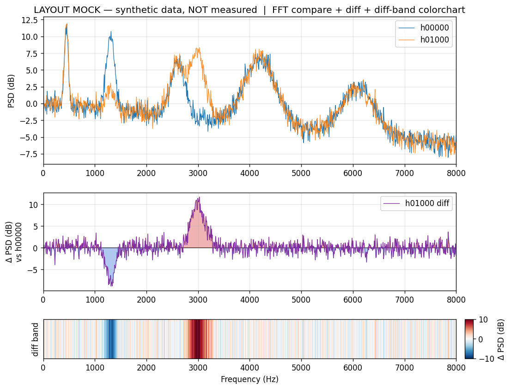
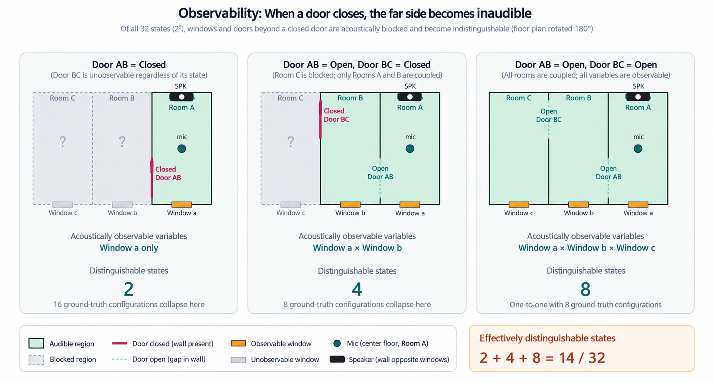

UNO Ping — 1つのスピーカーと1つのマイクで、すべての窓と扉を
この文書は、Hackster に英語で掲載する記事（
story_en.md）の日本語確認版です。内容は英語版と同じです。
部門： Home Automation
短い説明： Arduino UNO Q に付けた1つのスピーカーと1つのマイクで、家の中に2秒間のノイズ「ping」を鳴らします。Linux 側で動く小さなニューラルネットワークが、5か所の窓と扉のどれが開いているかを判定します。マイクから直接は届きにくい部屋の変化まで、聞き分けられるように学習しました。
コード： https://github.com/airpocket-soundman/IchiPing-UNO-Q — ドキュメント： https://airpocket-soundman.github.io/IchiPing-UNO-Q/
[PHOTO: カバー画像 — UNO Q、結果を表示した TFT、窓と扉に付けたサーボが写った模型全体]
1. 「窓、開けっぱなしだったかも？」
電車に乗っているときに雨が降り出して、窓を閉めたか不安になる。あるいは、窓を開けたまま午後じゅうエアコンが家を冷やしていたことに気づく。よくある対策は、窓や扉ごとに開閉センサーを付けることです。開口部が1か所増えるたびに、センサー、電池、ペアリングが1つずつ増えます。
UNO Ping は、別の問いから出発しました。家そのものをセンサーにできないか？ スピーカーが、決まった短いノイズを鳴らします。窓や扉が開いているか閉まっているかで、部屋を通る音の響き方が変わります。それを1つのマイクで録音し、小さなニューラルネットワークがすべての開口部の状態を一度に読み取ります。
「UNO」は「1」。1つのスピーカー、1つのマイク、1回の ping を、1枚の Arduino UNO Q で。名前は前身のプロジェクト IchiPing（「Ichi」は日本語の「1」）を受け継いでいます。

2. できること
- 模型の家の5か所（窓 a、b、c と、部屋の間の扉 AB、BC）の開閉、32通りの組み合わせを判定します。
- 1回の測定で PRBS を2秒鳴らし、EXEC ボタンを押してから約5秒で TFT に答えが出ます。
- すべて Arduino UNO Q の中で動きます。推論にクラウドも PC も使いません。
- 自分の限界を知っています。音響的に観測できるものと、かすかにしか聞こえないものを区別します（6章）。
模型の家
実験台は、3つの部屋が C | B | A の順に一列に並んだ模型の家です。
- 部屋 A に、スピーカーとマイクを1つずつだけ置きます。
- 各部屋に観測対象の窓が1つずつあります：a、b、c。
- 部屋の間は2枚の扉でつながっています：A と B の間が AB、B と C の間が BC。
- この5か所がそれぞれ開か閉かで、2⁵ = 32 通りの状態になります。各開口部はサーボで動くので、どの状態も自動で再現できます。
部屋 A の音は、2枚の扉を通らないと部屋 C に届きません。この直列の配置が問題を面白くしています。扉 AB が閉まると、その奥はすべて音響的に隠れてしまうのです（6章）。

[PHOTO: 模型を上から撮った写真。a、b、c、AB、BC のラベル入り] [VIDEO: 30〜60秒のデモ — スイッチを倒すとサーボが窓を開け、EXEC を押すと TFT に「Complete Success」が出る]
3. なぜ Arduino UNO Q か：1つの App Lab アプリに2つの頭脳
UNO Ping の前身 IchiPing は、最初は NXP FRDM-MCXN947 で作りました。UNO Q に移したことで、仕事をそれぞれ得意な側に置けるようになりました。
| 頭脳 | コード | 担当 |
|---|---|---|
| STM32U585 MCU（Zephyr、Arduino スケッチ） | uno_q/app/sketch/ | スイッチと EXEC ボタン、PCA9685 サーボドライバ（SG90 × 5）、ILI9341 TFT |
| Qualcomm QRB2210 MPU（Debian、App Lab の Python） | uno_q/app/python/ | MI2S0 の音声（MAX98357A ＋ INMP441）、信号処理、ONNX Runtime での推論、baseline の保存 |
| Arduino Router Bridge | 両者の間の RPC | on_infer_request、show_prediction、set_servo_armed、move_servo_deg など |

スケッチ、Python の処理、モデルは、1つの App Lab アプリとしてまとめて配備します。音声の経路とアンプの停止ピンは、ホスト側の小さな worker が受け持ちます。そのためコンテナ内のアプリは音響ハードウェアに直接触れず、停止処理も毎回確認されます。モデルの推論は Cortex-A53 で 1.7 ms（p95） しかかからず、時間の大半は2秒の ping です。
4. ハードウェア
部品表（BOM）
| 数量 | 部品 | 備考 |
|---|---|---|
| 1 | Arduino UNO Q（4 GB） | QRB2210 MPU ＋ STM32U585 MCU |
| 1 | UNO Breakout Carrier（JMISC） | 1.8 V の MI2S0 音声ピンを取り出す |
| 1 | INMP441 I²S MEMS マイク | DATA0、L/R = GND、VDD = 1.8 V |
| 1 | MAX98357A I²S アンプ ＋ 小型スピーカー | DATA1、GAIN = GND、SD = SoC GPIO 28 ＋ GND へ 10 kΩ |
| 1 | PCA9685 PWM ドライバ | I²C 0x40（D20/D21） |
| 5 | SG90 マイクロサーボ | 窓 a、b、c と扉 AB、BC |
| 1 | ILI9341 2.4 インチ SPI TFT | D11、D13、A2〜A5 |
| 5 + 1 | トグルスイッチ ＋ 押しボタン | D3〜D7 と、D8 の EXEC |
| 1 | 5 V 電源 | サーボとアンプ用、GND 共通 |
| 1 | 模型の家 | 部屋3つ、窓3つ、扉2つ |
ソフトウェア：Arduino App Lab、Arduino Router Bridge、Debian の ALSA、Python 3（NumPy、ONNX Runtime）。学習は PC の PyTorch で行います。
回路図と配線

| 信号 | UNO Q | 接続先 |
|---|---|---|
| BCLK / WS | SoC GPIO 98 / 99 | MAX98357A BCLK/LRC、INMP441 SCK/WS |
| マイクのデータ | SoC GPIO 100（DATA0） | INMP441 SD |
| アンプのデータ | SoC GPIO 101（DATA1） | MAX98357A DIN |
| アンプの停止 | SoC GPIO 28 | MAX98357A SD（GND へ 10 kΩ） |
| I²C | D20 / D21 | PCA9685 |
| SPI TFT | D11、D13、A2 CS、A3 RST、A4 DC、A5 BL | ILI9341 |
| 入力 | D3〜D7、D8 | スイッチ、EXEC |
ピン単位の配線図はドキュメントのサイト（docs/gpio_wiring.html）にあります。UNO Q 用のシールド基板2枚（音声と TFT）を EasyEDA Pro で設計しました。プロジェクトファイル、BOM、ピン対応表を添付しています。
シールド基板について。 このシールド基板は、テストとして AI に設計させたものです。そのため回路図の表記はあまり上手ではなく、読みやすくはありません。ただし回路としては正しく、実際に基板を製作・実装して、ここで紹介しているシステム全体が動作しています。

[PHOTO: 配線の近接写真 — UNO Q、Breakout Carrier、PCA9685、TFT、マイク、アンプ]
5. 音で状態を読む仕組み
- 鳴らす。 スピーカーが、8 kHz 以下に帯域制限した ±1 の PRBS を 2.0 秒鳴らします。
- 録る。 INMP441 で 3 秒を 48 kHz、24 bit で録音します。PRBS との相互相関で発音の開始位置に合わせ、16 kHz に間引きます。
- 比べる。 1024 点の対数パワースペクトルから、ボード上で録った全閉の baseline を引き、フレームごとに正規化します。
- 判定する。 パラメータ 10.4 万個の CNN が、32 通りのどれかを出力します。

なぜ baseline との差分を学習するのか。 2つの状態の生のスペクトルは、ほとんど同じに見えます。部屋そのものの共鳴や、スピーカーとマイクの特性が大部分を占めているからです。全閉の baseline を引くと、変わらない部分がすべて打ち消され、開口部による変化だけが残ります。ネットワークは、大きな固定のスペクトルの中から変化を探すのではなく、その変化そのものを強く、はっきりした特徴量として学習できます。
1次元ヒートマップの見方。 下段の帯（diff band）は、同じ差分を色で表したものです。縦線1本が1つの周波数ビンで、赤は baseline より大きく、青は小さく、白は変化なしを表します。下の図は、見やすくするための合成データによるイメージです（実測ではありません）。実測でも同じような縞が現れますが、もっと細かく、数も多くなります。状態ごとの帯を積み重ねたものが、8章のクラス別マップです。

移植で効いた細部。 元のモデルは、最初は UNO Q で 20.8% しか当たりませんでした。元のファームは I²S のデータを >> 12 で変換していましたが、ALSA の 16 bit 録音は >> 16 に相当します。24 bit の録音から元と同じ倍率（×16）をビット単位で再現し、PRBS の音量も元と同じにしたところ、録音のエネルギーは元のデータセットと 0.02 dB 以内で一致しました。この倍率がないと、スペクトルの 39% が −80 dB の下限に張り付いてしまいます。
6. 観測可能範囲という考え方
部屋 A にある1つのマイクには、すべての開口部の音が同じようには届きません。扉 AB が閉まっていると、その奥の部屋は音響的に影になります。窓 b や c を開けても、マイクで聞こえる音はわずかしか変わりません。そこで UNO Ping は、32 通りの状態を 14 の観測可能クラスにまとめています。
- A1 / A2 — 扉 AB が閉：観測できるのは窓 a だけ。
- B1〜B4 — AB が開、BC が閉：a、b、AB が観測でき、c は隠れる。
- C1〜C8 — AB と BC が開：5か所すべて観測できる。
図は3つの場合を示しています。扉 AB が閉まっていると聞こえるのは窓 a だけで、b・c・BC の 16 通りの組み合わせは 2 つの状態に縮退します。AB が開いて BC が閉まっていると窓 a と b が聞こえ、8 通りが 4 つに縮退します。両方の扉が開いていればすべての部屋がつながり、8 通りすべてを区別できます。合計 2 + 4 + 8 = 14 の観測可能クラス（32 状態中）です。

TFT は、各桁を観測できる（明るい色）か隠れている（暗い色）かで色分けし、Complete Success（青、32 状態すべて正解）、Conditional Success（緑、観測できる部分は正解）、Failure（赤）を表示します。システムが保証できることと、推測にすぎないことが、使う人に常に分かります。
[PHOTO: inf/act の2段と、緑の「Conditional Success」または青の「Complete Success」の帯を表示した TFT]
7. UNO Q で実データを自動収集
App Lab アプリは評価用の命令を受け付けるので、PC から Wi-Fi 経由でサーボを動かしながら、UNO Q で鳴らして録音できます。
- グレイコード順： 1ステップで動くサーボは必ず1台（サーボの動作は 242 回ではなく 106 回）。
- 一定の待ち時間： 最後のサーボが止まってから、ちょうど 0.5 秒後に録音を始めます。
- まとめ録り： 1つの状態の 50 フレームを、1本の再生と1本の録音で連続して録り、後から正確な間隔で切り出します（ずれ 0 サンプル、1 フレームあたり 2.3 秒）。
- sudo 不要、ボードに残さない： 音響ツールは
audioとgpiodグループの一般ユーザーで動き、録音は PC にコピーした時点でボードから消します。
1日で、8 セッション × 1,650 フレーム、環境雑音の録音2本（部屋の雑音と雑踏）、評価用のセッション4本を録りました。
8. マイクにかすかにしか届かない音を聞き分ける
いちばん伝えたい成果はここです。十分な実データと適切なデータ拡張によって、モデルは観測可能範囲の外、つまり閉じた扉の奥の窓の、ごく小さな音響の手がかりまで学習しました。
- セッションを増やす。 学習に使っていないセッションでの正解率が、1セッションの 47% から、5セッションで 94% まで上がりました。
- 元のレシピ。 強いデータ拡張とクロスベースライン学習。各録音を、ほかのすべてのセッションの baseline との差としても学習させ、1つの基準に依存しないようにします。
- 実際の環境雑音。 同じマイクで録った部屋の雑音と雑踏の音を、SNR 0〜35 dB で重ねます。
- 気温の水増し（新しく追加）。 夜になると、どのモデルも精度が落ちました。原因は部屋そのものでした。エアコンで部屋が冷えるにつれ、すべての共鳴が最大 −2.15% ずれていたのです（音速は 1 ℃ あたり約 0.18% 変わります）。baseline を引く*前に*、録音側のスペクトルだけをランダムに ±3% 周波数方向へ伸び縮みさせると、モデルはこの影響を学べます。
モデルが見ているもの。 下の図は、32 状態すべての baseline との差分の帯を、14 の観測可能クラス（A1〜C8）ごとに並べたものです（ラベルの h の後のビットは c BC b AB a の順）。クラスが違うと、縞の模様ははっきり違います。たとえば B の行には、A の行にない 650 Hz 付近の強い赤い帯があります。そのため 14 クラス分類は簡単です。一方、同じクラスの中の行はほとんど同じに見えます。A1 の 8 行は、隠れた窓 b・c と扉 BC だけが違う状態です。これを見分けるのが、難しい 32 クラス分類です。それでも、セッションを増やし、上のデータ拡張を加えることで、モデルはこのかすかな違いを学習し、32 状態すべてで 82.5% に達しました。

| モデル | 09:00 安定 | 19:35（−2.15% のずれ） | 20:44 | 21:28 ＋ 雑踏 | 32 状態の平均 |
|---|---|---|---|---|---|
| 元の FRDM のモデル | 20.8 / 59.4 | 35.9 / 68.8 | 9.1 / 49.7 | 11.6 / 50.0 | 19.3 |
| UNO Q、4 セッション | 86.5 / 100 | 43.1 / 84.1 | 69.1 / 99.7 | 76.9 / 100 | 68.9 |
| ＋ 周波数の伸び縮み | 89.6 / 100 | 56.9 / 93.8 | 82.8 / 100 | 80.9 / 100 | 77.6 |
| 8 セッション ＋ 伸び縮み ＋ 環境雑音（配備中） | 91.7 / 100 | 81.9 / 100 | 74.7 / 100 | 81.9 / 100 | 82.5 |
（32 状態 / 14 クラスの正解率、%。学習に使っていない評価用セッション）
- 観測可能な 14 クラスの正解率は、すべての評価データで 100% です。雑踏の中でも、2% の気温によるずれがあっても変わりません。
- 隠れた窓まで当てる必要がある 32 状態の正解率は、20.8% から 82.5% まで上がりました。閉じた扉の奥の窓 c（手がかりはわずか 0.5〜0.9 dB）は、56% から 86〜90% になりました。
9. ちらつかない TFT
最初の画面表示は、更新のたびに 320 × 240 の画面全体を描き直していました。今は、固定部分を1回だけ描き、変わった桁だけを描き直します。数字1桁と結果の帯は、1つの SPI の描画範囲に流し込む計算で作るスプライトとして描くので、途中の状態が画面に出ず、MCU に 150 KB の画面バッファも要りません。
10. 自分で作るには
- 模型の家を作り、部品を配線します（4章）。
- MI2S0 の音声バスを1回だけ有効にします（Device Tree のオーバーレイと ALSA のモジュール、
uno_q/audio/README.md）。 uno_q/app/の App Lab アプリを配備して既定アプリにし（arduino-app-cli properties set default user:ichiping-uno-q）、音声の worker を起動時に立ち上げます（uno_q/audio/start-runtime-worker.shをユーザーの@rebootcron に登録）。- 電源を入れます。アプリがサーボをすべて閉じ、全閉の baseline を録り直してから、サーボをスイッチに追従させます。PC は不要です。
- スイッチを倒して EXEC を押し、TFT を見ます。
- 自分の間取りで学習する：
pc/uno_q_collect.py→pc/uno_q_export_dataset.py→pc/training/train_32cls.py --baseline-jitter-dirs … --ambient-dirs … --freq-warp 0.03→pc/uno_q_evaluate_all.py。
詳しい手順は、ドキュメントのサイトにあります。
11. 持続可能性、使いやすさ、拡張性
- 持続可能性： 開口部ごとのセンサーではなく、1つのセンサーで済みます。「エアコンを動かしたまま窓が開いている」状態を見つけて、エネルギーの無駄を防げます。
- 使いやすさ： 窓に何も貼る必要がありません。画面にはっきり答えが出て、観測できる / 隠れているの区別も正直に示します。
- 拡張性： 収集、書き出し、学習、評価はスクリプトになっているので、別の間取りでも同じ手順で学習し直せます。App Lab が、スケッチ、Python、モデルを1つのアプリにまとめます。
12. 今後
- 複数の日やエアコンの設定にまたがるセッションを録り、ボード上で気温も記録する。
- スマートフォンから家の状態を確認できる Web UI の Brick。
- MCU / NPU で動かすための量子化モデル。
Arduino UNO Q、Arduino App Lab、ONNX Runtime、PyTorch で作りました。コードとドキュメントのすべて：https://github.com/airpocket-soundman/IchiPing-UNO-Q*